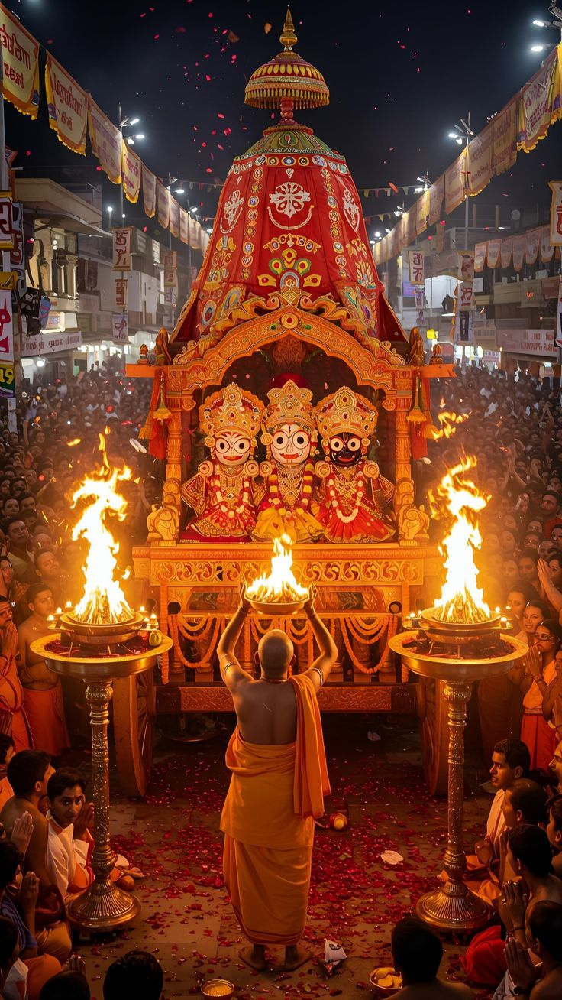

The Sacred Janarnath Temple



No video can replace the divine energy you feel when standing before Lord Shiva's sacred abode. Visit Janarnath Temple to receive blessings and experience true spirituality.
A sacred Hindu temple dedicated to Lord Shiva, located in the heart of Ranchi, Jharkhand. This architectural marvel and spiritual sanctuary attracts devotees and tourists alike with its serene ambiance and divine presence.
Savor the authentic flavors of Jharkhand with these local delicacies available near Janarnath Temple

The iconic dish of Jharkhand - baked wheat balls stuffed with sattu (roasted gram flour) served with mashed potato and brinjal curry.

Traditional sweet pancakes made from wheat flour, jaggery, and bananas, deep-fried and often offered as Prasad in temples.

A crunchy sweet snack made from wheat flour, jaggery, and coconut, traditionally prepared during Chhath Puja but available year-round.

Deep-fried rice and lentil pancakes served with a spicy chickpea curry, a popular breakfast item in Jharkhand.

A spicy and flavorful chicken curry cooked with local herbs and spices, served with steamed rice or roti.
Traditional fermented rice beer, a part of tribal culture in Jharkhand, often consumed during festivals and celebrations.
Experience the unique atmosphere and cultural tapestry around Janarnath Temple
The air is filled with devotion and the sound of temple bells
The temple comes alive during festivals like Maha Shivratri, Shravan month, Diwali, and Holi. During these times, the temple is decorated beautifully, and special ceremonies are conducted. The entire area transforms into a carnival of faith with devotional songs, cultural performances, and community feasts.
What's truly remarkable is the unity in diversity - people from all walks of life, different communities, and various parts of India come together to celebrate, showcasing the true spirit of India's cultural fabric.
Maha Shivratri
Grandest festival here
Watch these videos to get a glimpse of the temple's beauty, rituals, and atmosphere
Explore the architectural marvel, daily rituals, and spiritual ambiance of this sacred place in Ranchi, Jharkhand.
Temple Tour

Rituals & Ceremonies
Festival Celebration
Local Culture